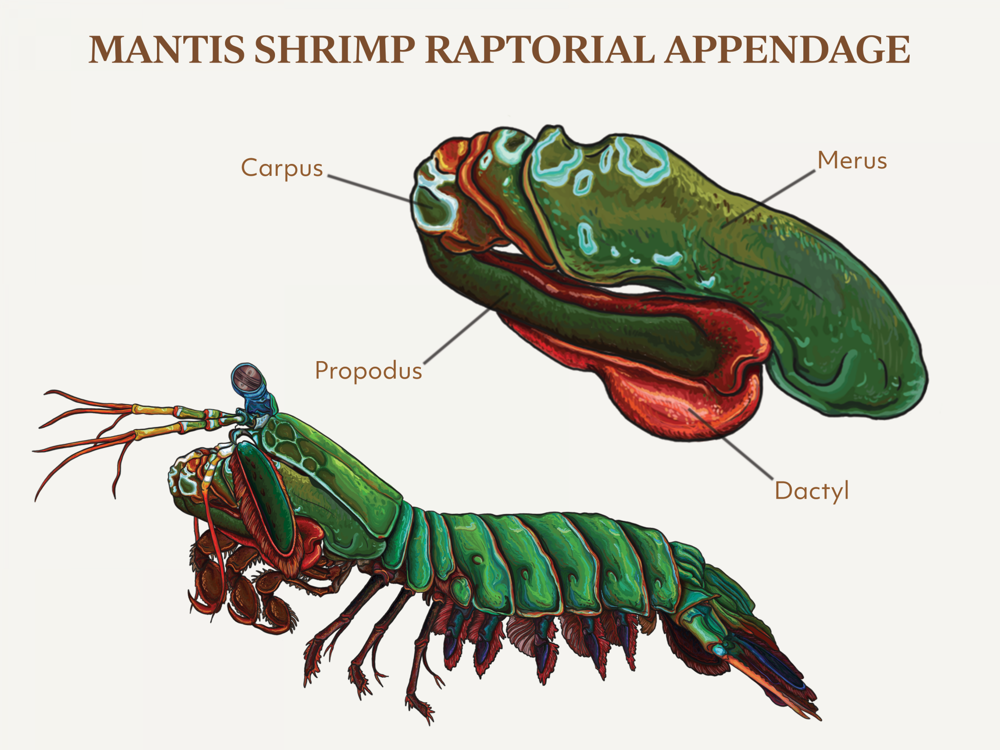

Descrição
Os estomatópodes são predadores ativos que caçam presas com o auxílio de um sentido de visão muito apurado e capaz de interpretar polarização no espectro ultravioleta e infravermelho). Apresentam uma grande variação de tamanho, que pode ir de poucos milímetros até aproximadamente 40 cm nas espécies maiores. Eles vivem em fundo consolidado, lodoso ou ainda arenoso, onde cavam seus buracos ou aproveitam-se dos orifícios deixados por outros animais para neles se instalar. São animais exclusivamente carnívoros, alimentando-se de camarões, caranguejos, moluscos, peixes e até mesmo outros da mesma ordem. O segundo par de patas, muito desenvolvido, é usado tanto para atacar a presa como para se defender. O urópodo, quando aberto, também funciona para defesa, como um escudo, fechando a galeria em que o animal esteja instalado. A fêmea desova no local onde se abriga e, em caso de perigo, enrola os ovos como uma bola, prendendo-os junto ao corpo até encontrar um abrigo mais protegido. Também conhecidas como esquilas ou lagosta-boxeadora, espalhadas pelas costas dos mares tropicais e subtropicais. Além das patas, elas apresentam uma silhueta característica, devido ao grande comprimento aparentemente de seu abdómen. Os ovos ficam ligados por uma massa gelatinosa que a mãe carrega contra o ventre até que eclodem, limpando-os sem parar. São animais que apresentam comportamentos sociais muito variados, desde ameaças visuais contra predadores até comportamentos de côrte. De acordo com a anatomia da sua pata raptorial é possível distinguir entre dois grupos funcionais, as perfuradoras (spearers) ou as esmagadoras (smashers), sendo que cada um dos tipos apresenta sua própria variação comportamental e até mesmo de habitat. As maiores esmagadoras, tais como exemplares de Odontodactylus scyllarus, são capazes de desferir um dos mais rápidos e violentos golpes do reino animal, um soco que pode apresentar a velocidade de um tiro calibre .22 (equivalente a 720 km/h) e uma pressão de impacto de 600 N/cm². Essa força esmagadora é a responsável pelo seu título de "lagosta-boxeadora" e é capaz de facilmente quebrar a carapaça de um caranguejo, as conchas duras e calcificadas de gastrópodes ou até mesmo quebrar o vidro reforçado de um aquário. Estomatópodes podem ser encontrados em quase todo o litoral brasileiro, mas não são animais fáceis de se observar pelos seus hábitos mais furtivos. Devem ser manuseados com muita cautela pois são animais preparados para se defender com força, caso sejam incomodados.
| Reino: | Animalia |
| Filo: | Arthropoda |
| Subfilo: | Crustacea |
| Classe: | Malacostraca |
| Subclasse: | Hoplocarida |
| Ordem: | Stomatopoda Latreille, 1817 |
Fatos sobre o Stomatopoda
Visão
Estomatopodes têm a visão mais complexa no reino animal, excedendo até a das borboletas. O camarão mantis tem olhos compostos montados em caules e pode girá-los independentemente um do outro para examinar seus arredores. Enquanto os humanos têm três tipos de fotorreceptores, os olhos de um camarão mantis têm entre 12 e 16 tipos de células fotorreceptoras. Algumas espécies podem até ajustar a sensibilidade de sua visão de cores.

Dieta e Caça
Na maioria das vezes, o camarão mantis é um caçador solitário e recluso. Algumas espécies perseguem ativamente as presas, enquanto outras esperam dentro do covil. O animal mata desdobrando rapidamente suas garras de raptor com uma aceleração impressionante de 102.000 m / s2 e velocidade de 23 mps (51 mph). O ataque é tão rápido que ferve a água entre o camarão e sua presa, produzindo bolhas de cavitação. Quando as bolhas colapsam, a onda de choque resultante atinge as presas com uma força instantânea de 1500 newtons. Portanto, mesmo que o camarão erre seu alvo, a onda de choque pode atordoá-lo ou matá-lo. A bolha em colapso também produz luz fraca, conhecida como sonoluminescência. Presas típicas incluem peixes, caracóis, caranguejos, ostras e outros moluscos. Os camarões Mantis também comem membros de sua própria espécie.
Reprodução e Ciclo de Vida
Em média, um camarão mantis vive 20 anos. Durante sua vida útil, pode produzir de 20 a 30 vezes. Em algumas espécies, a única interação entre machos e fêmeas ocorre durante o acasalamento. A fêmea põe ovos em sua toca ou os carrega consigo. Em outras espécies, os camarões acasalam em relacionamentos monogâmicos e ao longo da vida, com ambos os sexos cuidando dos ovos. Após a eclosão, os filhotes passam três meses como zooplâncton antes de se transformarem na forma adulta.